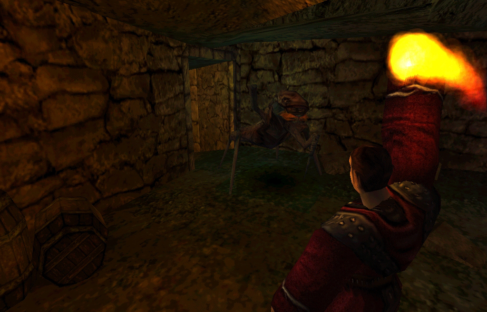
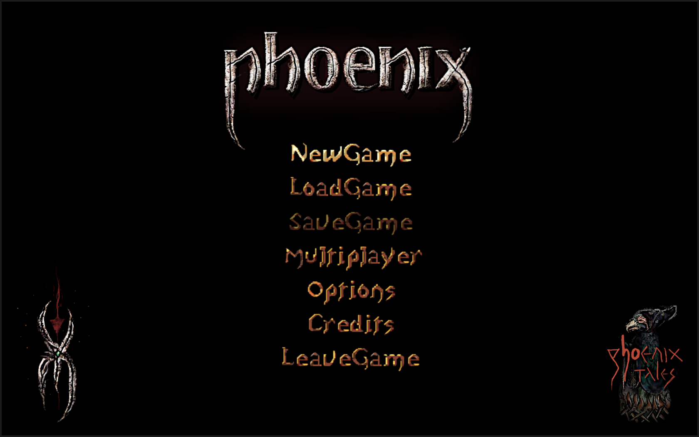

ABOUT

PHOENIX (also known under its
working title Project Nyx) is an
oldschool story-driven 3D action-rpg
with a radical immersive design.
Based on and conceived as a genuine reboot of GOTHIC (2001), PHOENIX is inspired by the vision as it was presented from 1998 to 2000 by the four founders of Piranha Bytes and promoted extensively by Tom Putzki (see our Gothic Archive).
PHOENIX is not an attempt to reconstruct one specific alpha version of one specific time or to shape the game according to the ideas of one specific founder. They had contradictory ideas, shaping the final product into a fragment of what was presented to us as its vision and culminating in a conflict about a worthy successor, that led to the cancellation of the first, forgotten Gothic Sequel.
What we attempt to achieve is to unite the different ideas from all periods of development. We want to realize this diverse dream, as we imagined the game to be, by the words written and images shown to us before release and turn that into one harmonious and coherent whole. And we want to go beyond in that we try to max out the radical potential of GOTHIC, as we dream beyond industrial constraints.
Thus, for us, PHOENIX is what GOTHIC should have been.
PHOENIX is not an official game of the GOTHIC franchise, it's a non-commercial project by a small indie team and a pure labour of love. We just try to realize the contradictory ideas of the four founders, bring to an end what they couldn't. And maybe thereby help, at least a bit, to heal the old wounds of their clash of dreams.
PHOENIX is designed as one coherent drama in three independent acts.
Orpheus (Alpha) + Nemesis (Sequel) + Elysion (Khorinis)
We need your help to realize this dream. You can contribute to our project, donate or support us by promoting our ideas.

ACT I: ORPHEUS (The Alpha: Chapter 1-5)
You are thrown into a self-organized penal colony without guards, sealed from the outside world through a magical barrier; a prison full of convicts which only serve one purpose - mining the precious magical ore to fuel the kingdom’s war outside. Experience anarchy: Gangs with different ideologies and brutal force govern the world of the condemned. Your goal is to survive and to escape.
ACT II: NEMESIS (The Sequel: Chapter 6-9)
You wake up from months of unconsciousness to walk through the ruins of the prison you tried to escape from - still trapped inside. Dive into a world of refugees, fleeing from a war of prophetic cause. You are on a mission to end war - in four special and unique plots depending on your chosen faction.

ACT III: ELYSION (The City: Chapter 10-12)
You are Thora, the Amazon, trying to pave your way through the war-torn city. Khorinis is in decay: Explore the different quarters under control of opposing groups, the poverty of the slums and the legendary, now abandoned ore factories. Amid the consequences of the Nemesis before, you are in search of peace, but hunted by your past.
DESIGN PHILOSOPHY
PHOENIX aka Project Nyx is based on four design principles:
- Immersion by Radical Visualization (Gameplay)
Intuitive and minimalistic user interface. Direct optical feedback; what you see is what you get. Everything is visualized on your player character in third person: clothes, weapons and even skills. Every gameplay element (HUD, attributes, skills, quest journal, teachers) is seamlessly integrated into the game lore. Real time, tactical combat and monster based puzzles. Immersive crafting in animated, individual steps. No rendered cutscenes breaking immersion, just ingame scenes and tracking shots inside the engine. Everything NPCs can interact with can be interacted with by the player as well. Gameplay focused on dialogues, exploration and survival. Realistically limited inventory. Different playstyles, determined by your immersively chosen class. Easy to understand, hard to master. Improve your character by following the story and by acting in accordance with the role you want to play. You improve your attributes through what we call learning-by-acting (not learning by doing). Skills you learn ingame from teachers. No Levels, no grinding, no EXPs, no skill trees, just roleplay. - Atmospheric Density in a small, handcrafted, living and believable world (Atmosphere)
A dense and detailed game world featuring only genuine content while avoiding any ‘filling’ elements. We believe that density, rather than size is key: A small game world, not seen as a concession but rather as a conscious decision in favor of higher content density. Every plant, every tree, every item, chest and NPC is placed by hand. NPCs and monsters do not wait or spawn for the player, they have their own simulated life and schedules. No building is mere scenery (unlike the Witcher), every building is walkable and individually designed without loading screen breaks (unlike TES). All NPCs, especially traders, have individual inventories. All characters are unique, drawn from more than one hundred face and clothing texture variations. NPCs react to the player’s guild, clothing and actions. - Narrative Depth in an uniquely-set Drama (Story)
Set in a dark, mystic valley full of conflict, in which a meaningful story is developed - with the game world serving as its stage. Narrated like a greek tragedy, structured in chapters, like a virtual tale. Every quest is linked to the main storyline and tied to a believable motivation of the player character. Plots unfold differently depending on the class acquired ingame. Several unforeseen story twists and events including visible changes and developments inside the game world. Different ways to solve missions with different outcomes and consequences. Multicomplex and multimedia-based story presentation inside (by dialogues, scriptures, artworks, locations, visual language) and outside (comics etc.) the game. Completely voiced dialogues (in the german version). - Wabi Sabi Aesthetics or Celebration of Decay (Artstyle)
Everything is fucked up: clothes are worn-out, patched and faded, the world is in decay. Archaic earthenware and textiles, moss, rust and patina everywhere. Display of destruction and reconstruction. Asymmetric, imperfect form language. Accentuated contrasts and matt colours. An unique art design (comparable to games like S.T.A.L.K.E.R. or Evil Twin: Cyprien's Chronicles) and Oldschool graphics, not as a sign of technical deprivation, but as a conscious decision and a matter of style.

PRESS
GameStar Interview (24.05.2020)
MORE INFOS
Please read our FAQ, in which you can find out more about the history and background of our project, about Gothic, the Gothic Sequel, a complete feature list and so on. Feel free to reach out if you have a question that is not answered there.
PROMOTION ART

OrpheusOST_Cave_by_KaiRo.mp3 [1 MB]
OrpheusOST_OldCampNight2_by_KaiRo.mp3 [1.3 MB]
NemesisOST_XardasTower_by_Jonas.mp3 [6.2 MB]
NemesisOST_CampOfTents_by_Jonas.mp3 [6 MB]


My re-discovery of Nyx and [the] Archive inspired me a lot! I've been terribly missing people expressing similar fixation with designs from Gothic I. -Avallach

You're dealing with the past of something, you're researching and reconstructing. Like raiders of the lost ark, you're connecting the treasures that were thought to be lost to a great and harmonious whole. This is a very ambitious project... -Larifari
It has the same vibe as the first Gothic. -Pioneer

This mod is made for true lovers of the alpha versions. It's almost the only hope that we will be able to experience this most mysterious and exciting atmosphere and the story of the alpha version. I've always dreamed about it. -Phantom

It's so damn greaaaat. Waiting with Uriziel in hand. -tefendy

[A] new era of how and what the real World of Gothic should have been from the beginning. -Arbax


{kind=link}